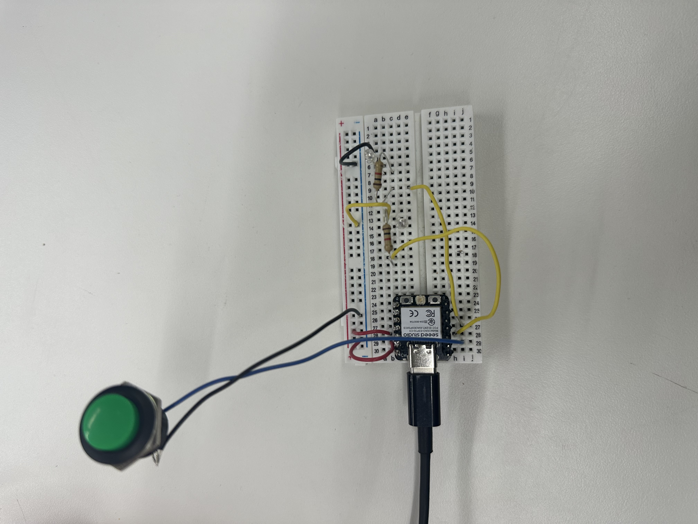
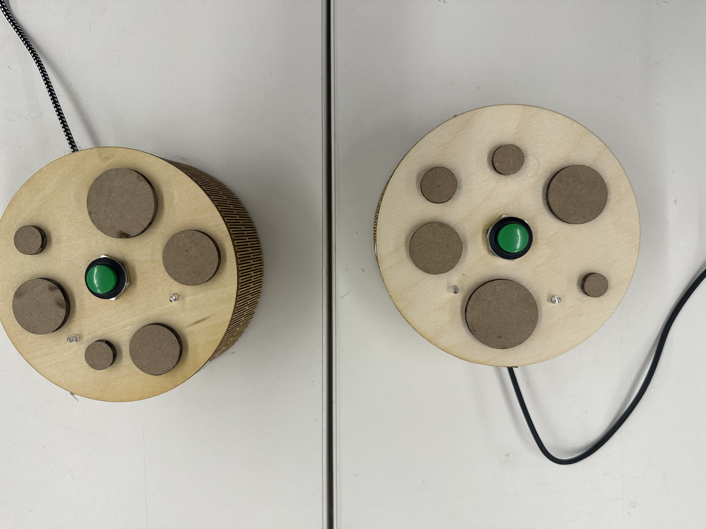

I have already done a peer-to-peer esp-now connection for my MVP, which you can find in week-7 documentation. However, to try new wireless connection, I teamed up with Uras to connect 2 ESP-32's via a broker, which enables us to connect to the other ESP even from a different country. It uses a online free server to to communicate. Also, we used "ntfy" to send messages to our phones as notifications. We did a circuit that when someone presses the button a constant red led lights on other's circuit and the red led of the person who pressed the button blinks to notify them that the other's red light is on. Moreover, it sends a notification to person who hasn't pressed the button indicating that the other has pressed the button, and the messeage says "NAME wants a cookie". When both parties presses the button a green led lights for 10 minutes and everybody receives a notification "Its cookie time." We got the inspiration from us going to Insomnia Cookies very often. These will stay on our dorms and when we both press we will go to get a cookie. We developed the code with Claude and we got the box for our circuit from boxes.py and modified it.
The codes for Mert.
The codes for Uras.

